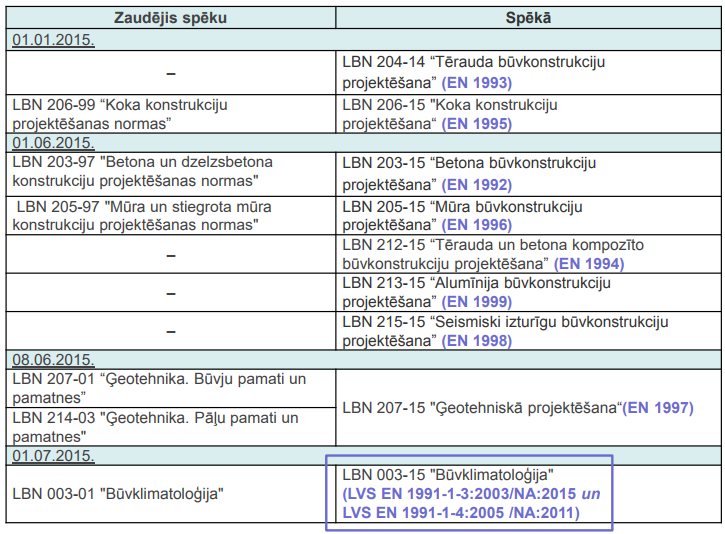

Palīgs būvkonstrukciju projektēšanā
Uzziņas rokasgrāmata būvkonstrukciju projektētājiem un studentiem.
Šī grāmata apkopo praktisko informāciju no Eirokodeksiem un Latvijas nacionālajiem pielikumiem (LVS EN), lai atvieglotu ikdienas projektēšanas darbu. Tā nav aizstājējs standartiem, bet palīgs ātrai orientēšanai un biežāk nepieciešamo vērtību atrašanai.
Satura apskats
- Slodzes — lietderīgās, klimatiskās, pašsvara slodzes un to kombinēšana
- Pamati — grunšu klasifikācija, pāļu pamati, tehnoloģiju izvēle
- Dzelzsbetons — materiālu īpašības, detalizācija, saliekamais dzelzsbetons
- Tērauds — savienojumi, kopnes, korozijas aizsardzība
- Koks — stiprības klases, koeficienti, robežlielumi
- Rasējumi — labā prakse rasējumu noformēšanā
Par grāmatu
Autors: N. Inovskis
Uzņēmums: K FORMA
Grāmata tiek pastāvīgi papildināta.
Priekšvārds
Sākotnēji šis nav apzināti un mērķtiecīgi veidots materiāls publicēšanai, bet tikai personiskas, dažādos periodos izdarītas piezīmes, kuras esmu veicis, lai atvieglotu savu darbu. Dokuments var saturēt neatjauninātu informāciju no izmantotajiem standartiem, pareizrakstības un interpretācijas kļūdas par ko es ļoti pārdzīvoju un atvainojos. Lietotāja pienākums būtiskām konstrukcijām ir papildus pārliecināties par informācijas pareizību no pirmavotiem.
Izmantojamie būvnormatīvi un standarti
Ja pasūtītāja uzdevumā nav noteikts savādāk, tad projektēšana saskaņā ar Latvijas būvnormatīviem no 01.07.2015. veicama pēc Eirokodeksiem un ar tiem saistītajiem standartiem (galvenokārt EN, bet arī ISO). Saistītie standarti ir atrunāti katrā Eirokodeksu sadaļā. Eirokodeksi ir Eiropas Standartizācijas komitejas CEN standartu saime, kas nosaka būvkonstrukciju projektēšanas kārtību.
Veicot esošu būvju pārbūvi vai atjaunošanu konstruktīvo elementu lokālajās pārbaudēs par atbilstošām konstrukcijām Latvijas Republikā uzskata arī tādas konstrukcijas, kas atbilst konstrukciju projektēšanas būvnormatīviem, kas bija spēkā no 1988. gada līdz Eirokodeksu spēkā stāšanās dienai 01.07.2015, ja vienlaikus īstenojas šādi nosacījumi:
- pēc pārbūves vai atjaunošanas netiek palielināta slodze uz konstruktīvo elementu;
- netiek mainīta konstruktīvā elementa aprēķina shēma;
- tehniskās apsekošanas laikā nav konstatētas virsnormas izlieces vai citas konstrukciju nedrošuma pazīmes.
Projektos izmantojamiem materiāliem un izstrādājumiem ir jāatbilst ar Eirokodeksiem saistītajiem standartiem.
Izmantojamie standarti

Vispārīgie projektēšanas nosacījumi
Projekta detalizācijas pakāpi nosaka savstarpējā pasūtītāja un projektētāja uzdevumā. Saskaņā ar standarta pieņēmumu konstruktīvo shēmu izvēli un projektēšanu veic atbilstoši kvalificēti speciālisti (attiecīgi arī izbūvi un uzraudzību veic speciālisti ar atbilstošām prasmēm un pieredzi). Konstrukcijas ir jāprojektē un jābūvē tā, lai projektētajā kalpošanas laikā tiktu nodrošināts atbilstošs drošības līmenis un tās būtu ekonomiskas. Konstrukcijas ir jāprojektē ar atbilstošu nestspēju, lietojamības kritēriju izpildi un ilgmūžību. Lai nodrošinātu adekvātu konstrukciju ilgmūžību jāņem vērā:
- Paredzētais ēkas izmantojums;
- Vides apstākļi (vides agresivitāte);
- Izmantoto materiālu un produktu ilgmūžība;
- Izvēlēto elementu šķērsgriezums un mezglu risinājums;
- Paredzētie ēkas uzturēšanas pasākumi projektētajā kalpošanas laikā;
- Pamatnes īpašības un ēkas konstruktīvā shēma;
- Darbaspēka kvalifikācija un darbu izpildes kontroles līmenis.
Ugunsgrēka situācijā konstrukcijām ir jānodrošina nestspēja nepieciešamajam laika periodam. Konstrukcijām nedrīkst rasties neatbilstoši lieli bojājumi no ārkārtas iedarbēm.
Vispārīgie projekta dati
Pārskatāma un precīza vispārīgo datu lapa ļoti būtiska ir ne tikai būvdarbu izpildītājam, bet arī izstrādātājam, lai darba procesā pie neskaidrībām var tajā atkārtoti ielūkoties un pieņēmumi būtu vienādi visa projekta ietvaros.
Piemērs no BVKB rīkotā semināra materiāliem

Minimāli pieļaujamās prasības, kas ir nodrošināmas 2. un 3. grupas būvēm (iekrāsotās ailes)
| Lietojot Eirokodeksus un to saimes standartus | Lietojot Eirokodeksus un to saimes standartus | Lietojot Eirokodeksus un to saimes standartus | Lietojot Eirokodeksus un to saimes standartus |
|---|---|---|---|
| Konsekvences klases CC | 1 | 2 | 3 |
| Izpildes klases EXC | 1 | 2 | 3 |
| Pielaižu klases | 1 | 2 | 3 |
| Inspekcijas līmenis | 1 | 2 | 3 |
Seku klases
| Seku klase | Apraksts | Ēku un inženierbūvju piemēri |
|---|---|---|
| CC3 | Smagas sekas attiecībā uz cilvēku dzīvību zaudēšanu, ar ļoti liekām ekonomiskām, sociālām un apkārtējās vides sekām. | Publiskās ēkas kuru sabrukšanas sekas ir smagas. Pieskaitāmas arī ēkas, kas uzskaitītas CC2a un CC2b, bet tām ir lielāka stāvu platība vai stāvu skaits. Visas publiskās ēkas, kurās nav cilvēku skaita ierobežojuma. Stadioni, kuros ir vairāk par 5 000 skatītāju vietu. Ēkas, kurās ir bīstamas vielas vai procesi. |
| CC2 | Vidējas sekas attiecībā uz cilvēku dzīvību zaudēšanu, ar ievērojamām ekonomiskām, sociālām un apkārtējās vides sekām. Pēc LVS EN 1991-1-7 izdala divas apakšklases: CC2a CC2b | Dzīvojamās un biroju ēkas, publiskās ēkas, kuru sabrukšanas sekas ir vidējas. Privātmājas ar 5 stāviem. Viesnīcas ar ne vairāk kā 4 stāviem. Dzīvojamās ēkas ar ne vairāk kā 4 stāviem. Biroja ēkas ar ne vairāk kā 4 stāviem. Industriālās ēkas ar ne vairāk kā 3 stāviem. Mazumtirdzniecības ēkas ar ne vairāk kā 3 stāviem un katra stāva platību ne lielāku par 1 000 m2. Vienstāva izglītības iestādes. Publiskas ēkas ar ne vairāk kā 2 stāviem un katra stāva platību ne lielāku par 2 000 m2. Viesnīcas un dzīvojamās mājas ar stāvu skaitu lielāku par 4 un nepārsniedz 15 stāvus. Izglītības iestādes ar stāvu skaitu lielāku par 1 un nepārsniedz 15 stāvus. Mazumtirdzniecības ēkas ar stāvu skaitu lielāku par 3 un nepārsniedz 15 stāvus. Slimnīcas ar stāvu skaitu ne vairāk kā 3. Biroja ēkas ar stāvu skaitu lielāku par 4 un nepārsniedz 15 stāvus. Publiskas ēkas, kurās stāva platība ir robežās no 2 000 m2 līdz 5 000 m2. Auto stāvvietas ar ne vairāk kā 6 stāviem. |
| CC1 | Vieglas sekas ar mazu vērā neņemamu risku cilvēka dzīvībai, ar vieglām ekonomiskām, sociālām un apkārtējās vies sekām. | Lauksaimniecības ēkas, kur parasti cilvēki neiet, piemēram, noliktavas un siltumnīcas, ja tās neatrodas tuvāk par 1.5 ēkas augstumiem līdz blakus ēkām vai zonām, kur uzturas cilvēki. Pēc LVS EN 1991-1-7 pie šīs klases var pieskaitīt arī privātmājas ar ne vairāk kā 4 stāviem. |
Drošības klases
Ēku drošības klases (RC) atbilst ēku seku klasēm. RC1 atbilst CC1, RC2 atbilst CC2 un RC3 atbilst CC3. Ēku drošības klases tiek aprakstītas ar drošības indeksu β. Drošuma jeb uzticamības indekss tiek izmantots konstrukcijas sabrukuma iestāšanās varbūtības aprēķināšanai un ir aprakstāms ar funkciju: Pf=Ф(-β). Praksē izmanto vienkāršotu paņēmienu drošības līmeņa koriģēšanai lietojot korekcijas koeficientu KFI. Ar koeficientu koriģē slodžu drošības koeficientu γF un materiālu drošības koeficientu γM.
| Koeficients KFI | Drošības klase | Drošības klase | Drošības klase |
|---|---|---|---|
| Koeficients KFI | RC1 | RC2 | RC3 |
| KFI | 0.9 | 1.0 | 1.1 |
Projektēšanas kontroles līmenis
Parasti projektēšanas kontroles līmenis ir piesaistīts ēkas drošības klasei. Latvijā noteikts, ka obligāta trešās puses ekspertīze ir III grupas būvēm, atbilstoši šīm ēkām projektēšanas kontroles līmenis ir DSL3. Pārējiem līmeņiem Latvijas normatīvie akti nenosaka prasības prasības projektēšanas kontrolei.
| Projektēšanas kontroles klase | Kontroles raksturs | Minimālās rekomendētās prasības aprēķinu, rasējumu un tehnisko specifikāciju kontrolei |
|---|---|---|
| DSL3 | Izvērsta kontrole | Kontrole, ko veic trešā puse – ekspertīze |
| DSL2 | Parasta kontrole | Kontrole, kas tiek veikta projektēšanas organizācijas iekšienē. Veic speciālists, kurš nav piedalījies konkrētā projekta izstrādē. |
| DSL1 | Parasta kontrole | Paškontrole. Veic speciālists, kas izstrādājis konkrēto projektu |
Būvdarbu uzraudzības līmeņi
Tabula pēc LVS EN 1990 B pielikuma
| Inspekcijas līmeņi | Skaidrojums | Minimālās rekomendētās prasības aprēķinu, rasējumu un tehnisko specifikāciju kontrolei |
|---|---|---|
| IL 3 (augsts) | Paplašināta inspekcija | Trīskārša inspekcija (piesaistot akreditētas laboratorijas un / vai speciālistus) |
| IL 2 (vidējs) | Normāla inspekcija | Inspekcija, saskaņā ar būvorganizācijas kvalitātes procedūrām |
| IL 1 (zems) | Normāla inspekcija | Pašinspekcija |
Ekspluatācijas ilguma kategorijas
| Projektētā kategorija | Paredzamais ekspluatācijas ilgums (gados) | Piemēri |
|---|---|---|
| 1 | 10 | Pagaidu konstrukcijas |
| 2 | no 10 līdz 25 | Aizvietojamas būvkonstrukciju daļas, piemēram, celtņa sijas, balsti |
| 3 | no 15 līdz 30 | Lauksaimniecības un citas līdzīgas būvkonstrukcijas |
| 4 | 50 | Ēku un citas parastas būvkonstrukcijas |
| 5 | 100 | Monumentālu ēku konstrukcijas, tilti u.c. inženierbūvju konstrukcijas |
Ja nav norādīts atsevišķi vienmēr lietot kategoriju S4 (paredzamais ekspluatācijas ilgums 50 gadi).
Slodzes un iedarbes
Slodžu parciālie koeficienti palielina pieprasījumu pēc nestspējas (novirza līkni pa labi), kamēr materiālu parciālie koeficienti samazina to nestspēju (novirza līkni pa kreisi) kopumā paaugstinot drošības līmeni. Apgabala robežās, kur abas līknes pārklājās ir iespējama avārija pat gadījumā, ja konstrukcija ir projektēta bez kļūdām (aptuveni 0.01% iespējamība).

Lietojot Eirokodeksu sistēmu primāri ir lietojami parciālie koeficienti, kas ir noteikti projektēšanas standartu nacionālajos pielikumos. Ja vērtība kādam konkrētam koeficientam nacionālajā pielikumā nav dota, tad ir izmantojama normatīva pamatdokumentā uzrādītā rekomendējamā vērtība.
Lietderīgās slodzes
Lietderīgās slodzes pēc LVS EN 1991-1-1/NA
| Kategorija | Raksturīgā izmantošana | qk, kN/m2 | Qk, kN | Piemērs |
|---|---|---|---|---|
| A | Platības mājsaimniecības un sadzīves vajadzībām Grīdas Kāpnes Balkoni | 2.00 3.00 2.50 | 2.00 3.00 2.50 | Telpas dzīvojamās mājās un mājās, guļamistabas un palātas slimnīcās, guļamistabas viesnīcās un viesu mītnēs, virtuves un tualetes. |
| B | Biroju platības | 2.50 | 2.50 | |
| C | Platības, kur cilvēki var pulcēties (izņemot platības, kas noteiktas A, B un D kategorijās) | 2.50 3.00 4.00 5.00 6.00 | 3.00 4.00 4.00 5.00 4.00 | C1 – Platības ar galdiem, piemēram, telpas kafejnīcās, restorānos, skolās, ēdnīcās, lasītavās, pieņemšanas telpās. C2 – Platības ar nostiprinātām sēdvietām, piemēram, platības baznīcās, teātros vai kinoteātros, konferenču zālēs, lekciju zālēs, aktu zālēs, uzgaidāmās telpās , dzelzceļu uzgaidāmās telpas. C3 – No šķēršļiem brīvas platības cilvēku kustībai, piemēram, platības muzejos, izstāžu zālēs un tml., kā arī publiski pieejamās platības sabiedriskajās un administratīvajās ēkās, viesnīcās, slimnīcās, dzelzceļa staciju priekštelpās C4 – Platības, kurās var notikt fiziskas darbības, piemēram, deju zāles, vingrošanas zāles, skatuves. C5 – Platības, kuras ir pieejamas lielām cilvēku masām, piemēram, publisko sarīkojumu ēkas, koncertu halles, sporta zāles, ieskaitot tribīnes, terases un ieejas platības, dzelzceļa peroni. |
| D | Tirdzniecības platības | 4.00 5.00 | 4.00 7.00 | D1 – Platības vispārējos mazumtirdzniecības veikalos D2 – Platības universālveikalos. |
| E | Noliktavas platības | 7.50 | 7.00 | E1 – Lietderīgā platība uz noliktavu grīdām |
| F | Satiksmes platības ar transportlīdzekļa bruto svaru ≤ 30 kN | 2.50 | 20.00 | Lietderīgā slodze vieglo automobiļu garāžu un transportlīdzekļu satiksmes vietās. |
| G | Satiksmes platības ar transportlīdzekļa bruto svaru no 30 kN līdz 160 kN | 5.00 | 90.00 | Lietderīgā slodze transportlīdzekļu satiksmes vietās. |
| H | Jumtu lietderīgās slodzes | 0.40 | 1.00 | Paredzētas apkalpošanai, analogu slodzi var pieņemt arī apkalpošanas tiltiņiem. |
| - | Neizmantojamas platības, kas netiek izmantotas kā noliktavas (bēniņi, zonas ap iekārtām) | 1.00 | 2.00 | Punkts iekļauts 2022. gada Latvijas nacionālajā pielikumā. |
| - | Kāpnes, ja vien pie konkrētās kategorijas nav norādīts citādāk. | 3.00 | 3.00 | Punkts iekļauts 2022. gada Latvijas nacionālajā pielikumā. |
Kategorijām no A līdz E ir iespējams veikt slodžu samazināšanu ievērtējot αA faktoru. Rekomendējamā vērtība tiek noteikta pēc sakarības:, kur A0=10 m2 un A ir noslogotā platība.
Kategorijām C un D αA≥ 0.60.
Rekomendējamās parciālo faktoru vērtības
Kombinē tikai tās slodzes, kas var realizēties vienlaicīgi.
Kombinējot slodzes jāievērtē tabulā dotās rekomendēto parciālo koeficientu vērtības.
| Iedarbe | Ψ0 | Ψ1 | Ψ2 |
|---|---|---|---|
| Lietderīgās slodzes ēkās | Lietderīgās slodzes ēkās | Lietderīgās slodzes ēkās | Lietderīgās slodzes ēkās |
| A kategorija: mājsaimniecības un dzīvojamās telpas (platības) | 0.7 | 0.5 | 0.3 |
| B kategorija: biroju telpas | 0.7 | 0.5 | 0.3 |
| C kategorija: pulcēšanās telpas | 0.7 | 0.7 | 0.6 |
| D kategorija: tirdzniecības telpas | 0.7 | 0.7 | 0.6 |
| E kategorija: noliktavu telpas | 1.0 | 0.9 | 0.8 |
| F kategorija: platības transportlīdzekļu kustībai ar svaru ≤30 kN | 0.7 | 0.7 | 0.6 |
| G kategorija: platības transportlīdzekļu kustībai ar svaru virs 30 kN un zem 150 kN | 0.7 | 0.5 | 0.3 |
| H kategorija: jumti (var pielietot vērtības arī dažādiem apkalpes tiltiņiem) | 0.0 | 0.0 | 0.0 |
| Sniega slodzes uz ēkām | Sniega slodzes uz ēkām | Sniega slodzes uz ēkām | Sniega slodzes uz ēkām |
| Ziemeļvalstis un Centrāleiropas valstis ar H≥1000 m (Ar NA piemērots arī Latvijā) | 0.7 | 0.5 | 0.2 |
| Centrāleiropas valstis ar H<1000 m | 0.5 | 0.2 | 0.0 |
| Vēja slodzes uz ēkām | 0.6 | 0.2 | 0.0 |
| Temperatūra, bet ne ugunsgrēka gadījumā | 0.6 | 0.5 | 0.0 |
Klimatiskās slodzes
Sniega slodze
Saskaņā ar LVS EN 1991-1-3/NA:2019 punktu 2.7 par projektā ievērtējamām situācijām un slodžu shēmām visā Latvijas teritorijā ir jāpielieto B1 slogojuma gadījums (notiek īpaša sniega snigšana, nav īpaši sniega sanesumi, sanesta sniega slodze apskatāma arī ārkārtas situācijā pēc vienādojuma μ1·Ce·Ct·Cesl·sk). 6.2 punktā aprakstītos sanesumus jāapskata kā projekta ievērtējamā ilgstošā / īslaicīgā situācija.
A.1. tabula no LVS EN 1991-1-3
| Normāli apstākļi | Īpaši apstākļi (Exceptional conditions) | Īpaši apstākļi (Exceptional conditions) | Īpaši apstākļi (Exceptional conditions) |
|---|---|---|---|
| A gadījums | B1 gadījums | B2 gadījums | B3 gadījums |
| Nenotiek īpaša sniega snigšana. Nav īpaši sniega sanesumi. | Notiek īpaša sniega snigšana. Nav īpaši sniega sanesumi. | Nenotiek īpaša sniega snigšana. Ir īpaši sniega sanesumi. | Notiek īpaša sniega snigšana. Ir īpaši sniega sanesumi. |
| 3.2.(1) | 3.3.(1) | 3.3.(2) | 3.3.(3) |
| Projektā ievērtējamā ilgstoša / īslaicīga situācija [1] nesanesta sniega slodze μi·Ce·Ct·sk [2] sanesta sniega slodze μi·Ce·Ct·sk | Projektā ievērtējamā ilgstoša / īslaicīga situācija [1] nesanesta sniega slodze μi·Ce·Ct·sk [2] sanesta sniega slodze μi·Ce·Ct·sk | Projektā ievērtējamā ilgstoša / īslaicīga situācija [1] nesanesta sniega slodze μi·Ce·Ct·sk [2] sanesta sniega slodze μi·Ce·Ct·sk (izņemot jumtu formas, kas dotas B pielikumā) | Projektā ievērtējamā ilgstoša / īslaicīga situācija [1] nesanesta sniega slodze μi·Ce·Ct·sk [2] sanesta sniega slodze μi·Ce·Ct·sk (izņemot jumtu formas, kas dotas B pielikumā) |
| Projektā ievērtējamā ārkārtējā situācija, kur sniegs ir ārkārtēja iedarbe Situācija nav ievērtējama | Projektā ievērtējamā ārkārtējā situācija, kur sniegs ir ārkārtēja iedarbe [3] nesanesta sniega slodze μi·Ce·Ct·Cesl·sk [4] sanesta sniega slodze μi·Ce·Ct·Cesl·sk | Projektā ievērtējamā ārkārtējā situācija, kur sniegs ir ārkārtēja iedarbe [3] sanesta sniega slodze μi ·sk jumu formām, kas dotas B pielikumā | Projektā ievērtējamā ārkārtējā situācija, kur sniegs ir ārkārtēja iedarbe [3] nesanesta sniega slodze μi·Ce·Ct·Cesl·sk [4] sanesta sniega slodze μi ·sk |
Sniega slodze Latvijā pēc LVS EN 1991-1-3-2003-NA-2019
Sniega slodžu raksturīgās vērtības uz zemes virsmas (sk) ar varbūtību 0.02 (NA 1. tabula)
| Sniega slodzes reģions | Sk, kN/m2 |
|---|---|
| I | 1.25 |
| II | 1.50 |
| III | 1.75 |
| IV | 2.00 |
| V | 2.30 |

Interpolāciju neveic, bet lieto vērtību kāda ir norādīta apgabalam, kurā ietilpst projektējamā būve.
Sniega sanesumi pie izvirzījumiem un šķēršļiem
Vēja apstākļos sniega sanesumi var veidoties uz jebkura jumta, kuram ir šķēršļi. Uz gandrīz horizontāliem jumtiem var lietot šādus sniega formas koeficientus: μ1 = 0.8; μ2 = γ·h/sk, bet ar ierobežojumu >0.80 un <2.00. Sniega tilpumsvaru γ var pieņemt vienādu ar 2.00 kN/m3. Sanesuma garums ls = 2h, bet ar ierobežojumu >5.00 m un <15.00 m (faktiski pie biežāk sastopamiem šķēršļiem uz jumta ls būs 5.00 m, jo pie standartā uzdotās sakarības lielāks sanesuma garums var veidoties tikai šķēršļa augstumam pārsniedzot 2.50 m).
Sanesumu principiālā shēma pie šķēršļiem

Koeficientu μ2 vērtības pie Latvijas sniega reģioniem no 1 līdz 5 (Sk attiecīgi no 1.25 līdz 2.30 kPa)

Vēja slodze
Vēja slodze Latvijā pēc LVS EN 1991-1-4:2005/NA:2011
Visā latvijas teritorijā, izņemot jūras piekrastes zonu, noteikts fundamentālais vēja pamatātrums Vb,0=21 m/s.
Rīgas jūras līča piekrastes zonā noteikts fundamentālais vēja pamatātrums Vb,0=24 m/s.
Baltijas jūras piekrastes zonā noteikts fundamentālais vēja pamatātrums Vb,0=27 m/s.
Ar jūras piekrastes zonu ir jāsaprot 25 km plata zona gar Baltijas jūras krastu un 15 km plata zona gar Rīgas jūras līča krastu, ja netiek ņemta vērā apvidus ortogrāfija. Jūrā un kāpu zonā tiek rekomendēts piemērot lielāku fundamentālo vēja pamatātrumu, tā vērtību izvērtē projektētājs.

Ilustrēti piemēri apvidus kategorijas izvēlei
| Apvidus kategorija | Apraksts | Ilustratīvs piemērs |
|---|---|---|
| 0 | Jūra un atklātas jūras iedarbei pakļauta piekrastes teritorija | |
| I | Ezeri vai teritorijas ar nenozīmīgu veģitāciju un bez šķēršļiem | |
| II | Teritorija ar zemu veģetāciju, kā, piemēram, zāli un atsevišķi stāvošiem šķēršļiem (kokiem, ēkām), kas viens no otra atrodas vismaz 20 šķēršļa augstuma attālumā. | |
| III | Teritorija ar regulāru veģetāciju vai ēkām, vai arī atsevišķi stāvošiem šķēršļiem, kuri viens no otra atrodas ne vairāk kā 20 šķēršļu augstumu attālumā, piemēram, ciemati, priekšpilsētas, pastāvīgs mežs. | |
| IV | Teritorija, kurā vismaz 15% no virsmas ir apbūvēta ar būvēm, kuru vidējais augstums pārsniedz 15 m. |
Konstrukciju pašsvara un apdares slodzes
Dobumotās pārseguma plātnes
Pie konstrukciju pašsvara slodžu aprēķina ir būtiski ievērtēt pārseguma plātņu pašsvaru ar aizbetonētām šuvēm. Bieži katalogos ir uzrādīts paneļu pašsvars bez šuvju aizpildījuma.
Izplatītāko pārseguma plātņu pašsvara slodzes ar aizpildītām šuvēm
| Nr. | Šķērsgriezums | H, mm | B, mm | Pašsvars (ar aizpildītām šuvēm) kN/m2 | Aizpildījuma apjoms l/m2 |
|---|---|---|---|---|---|
| 1 | HCS 200 | 200 | 1196 | 2.55 | 7.00 |
| 2 | HCS 220 | 220 | 1196 | 3.40 | 8.00 |
| 3 | HCS 265 | 265 | 1196 | 3.80 | 10.00 |
| 1 | HCS 320 | 320 | 1196 | 4.05 | 12.00 |
| 5 | HCS 400 | 400 | 1196 | 4.65 | 17.00 |
| 6 | HCS 500 | 500 | 1196 | 5.53 | - |
Atsevišķu materiālu tilpumsvari pašsvara noteikšanai
| Nr. | Nosaukums | Tilpumsvars, kN/m3 |
|---|---|---|
| 1 | Granīts | 26.00 |
| 2 | Granīta šķembas | 16.00 |
| 3 | Sausas smiltis | 16.00 |
| 4 | Tērauds | 78.50 |
| 5 | C24 klases koksne | 4.20 |
| 6 | Stikls loksnēs | 25.00 |
| 7 | Bērza saplāksnis | 7.00 |
| 8 | Kokskaidu plātne (OSB) | 8.00 |
| 9 | Paroc COS 5 (Izolācija betona sendviča tipa paneļos) | 0.65 |
Norādījumi par griestu konstrukciju pašsvaru
Ja projektēšanas gaitā nav precīzas informācijas par griestu konstrukciju zem dimensionējamajiem elementiem, tad tipiskā variantā pieņem vērtību 0.50 kN/m2, kas ievērtē apšuvumu, latojumu un inženierkomunikācijas, piemēram AVK tīklus.
Nelabvēlīgākās slodzes noteikšana
Vairāklaidumu sistēmā tradicionāli:

Izbūves klases
Parasti izbūves klase (EXC) tiek noteikta identiska seku klasei CC, piemēram, EXC1 atbilst CC1, tomēr izbūves klase objekta ietvaros dažādiem elementiem var atšķirties. Tērauda elementiem izbūves klase EXC ir atkarīga ne tikai no seku klases CC, bet arī no konstrukciju izmantošanas klases SC un ražošanas klases PC.
Matrica izbūves klases izvēlei
| Seku klase | Seku klase | CC1 | CC1 | CC2 | CC2 | CC3 | CC3 |
|---|---|---|---|---|---|---|---|
| Izmantošanas klase | Izmantošanas klase | SC1 | SC2 | SC1 | SC2 | SC1 | SC2 |
| Ražošanas klase | PC1 | EXC1 | EXC2 | EXC1 | EXC3 | EXC3 | EXC3 |
| Ražošanas klase | PC2 | EXC2 | EXC1 | EXC1 | EXC3 | EXC3 | EXC4 |
Ēku robustuma nodrošinājums
Prasības ēku robustuma nodrošināšanai ir dotas katras konstrukciju grupas standartā, bet izvērsti tās ir aprakstītas standartā LVS EN 1991-1-7 1. Eirokodekss. Iedarbes uz konstrukcijām. 1-7. daļa: Vispārīgās iedarbes. Ārkārtas iedarbes. Seku klases ar piemēriem skatīt iepriekš materiālā (punkts 2.2).
Shēmā uzrādītas stratēģijas attiecībā uz projektā apskatāmajām ārkārtējām situācijām

Robustuma nodrošinājums ēkām ar Seku klasēm CC1 un CC2a.
- Ēkām ar seku klasi CC1 ir jābūt projektētām saskaņā ar atbilstošo Eirokodeksu prasībām stabilitātes nodrošināšanai normālas ekspluatācijas situācijai, papildus prasības ārkārtas iedarbēm netiek izvirzītas;
- Ēkām ar seku klasi CC2a ir jābūt projektētām saskaņā ar atbilstošo Eirokodeksu prasībām stabilitātes nodrošināšanai normālas ekspluatācijas situācijai. Papildus, ir jānodrošina pārsegumiem horizontāla saišu sistēma saskaņā ar LVS EN 1991-1-7 A.5. punkta prasībām.
Robustuma nodrošinājums ēkām ar Seku klasi CC2b.
Ēkām ar seku klasi CC2b ir jābūt projektētām saskaņā ar atbilstošo Eirokodeksu prasībām stabilitātes nodrošināšanai normālas ekspluatācijas situācijai. Papildus, ir jānodrošina:
- Ēkas telpiskā stabilitāte un lokāls pārseguma sabrukums ne lielāks kā 15% no stāva platības un ne lielāks kā 100 m2 situācijā, kad tiek izņemta jebkura viena kolonna vai sija, kas balsta kolonnu, vai sienas nominālā šķērsgriezuma izņemšana viena stāva robežās;
- Pārsegumiem horizontāla saišu sistēma saskaņā ar LVS EN 1991-1-7 A.5. punkta prasībām, kolonnām un sienām vertikālu saišu sistēma saskaņā ar LVS EN 1991-1- 7 A.6. punkta prasībām; ja sabrukuma platība pārsniedz 15% no stāva platības vai 100 m2, tad nepieciešamie elementi ir jāuzskata par «atslēgas elementiem» un jānodrošina to nestspēja ārkārtas iedarbju situācijās.
Robustuma nodrošinājums ēkām ar Seku klasi CC3.
Ēkām ar seku klasi CC3 ir jāveic risku analīze. Risku analīzē ir jāiekļauj ne tikai paredzamas ārkārtas iedarbes, bet arī neparedzamas ārkārtas iedarbes. Būtiski – veicamajiem pasākumiem saskaņā ar risku analīzi ir jābūt striktākiem kā Seku klasei CC2b.
Prasības horizontālajām saitēm pārsegumiem, kas balstīti uz kolonnām

Prasības horizontālajām saitēm pārsegumiem, kas balstīti uz sienām

Ugundrošu konstrukciju projektēšana
Fire design
Ugunsgrēka situācijai jāpielieto sekojoša slodžu kombinācija:

Latvijā Ψ1 vai Ψ2 lietošana nacionālajā pielikumā nav noteikta, attiecīgi lietojama rekomendējamais koeficients, kas ir Ψ2 (kvazipastāvīgā mainīgā slodžu vērtība).
Konstruktīvās shēmas un darbības principi
Risinājumi telpiskās noturības nodrošināšanai
Piemēri telpiskās noturības nodrošināšanai ar papildus stinguma elementiem

Darbības principi lineāriem pārseguma elementiem

PAMATI UN PAMATNE
Vispārīgi
Latvijā pamatu aprēķini veicami pēc DA2 (design approach 2), kur izmantojams apvilktais koeficientu komplekts:

Nepieciešamais ģeotehniskās izpētes dziļums pāļu pamatiem

Tehnoloģiju pielietojamība
Dati no Menard Latvia, kur apkopota darbu piemērotība ģeotehniskajiem apstākļiem un būves veidiem.


Biežāk lietoto tehnoloģiju atšifrējumi:
DC – dinamiskā blietēšana (dynamic compaction)

ISR - Cementācija ar Grunts Blīvēšanu

DSM Columns – Deep Soil Mixing – Dziļā grunts stabilizācija

VF – Vibroflotācija

VD - Vertikālās drenas

CFA Pāļi

Grunšu blīvumi
| Grunts tips / Soil type | Mitras grunts tilpumsvars / Moist bulk density, Υ (kg/m3) | Mitras grunts tilpumsvars / Moist bulk density, Υ (kg/m3) | Ūdenspiesātinātas grunts tilpumsvars / Saturated bulk density, Υ (kg/m3) | Ūdenspiesātinātas grunts tilpumsvars / Saturated bulk density, Υ (kg/m3) |
|---|---|---|---|---|
| Grunts tips / Soil type | Irdena / Loose | Blīva / Dense | Irdena / Loose | Blīva / Dense |
| Rupjgraudainas gruntis / Granular | Rupjgraudainas gruntis / Granular | Rupjgraudainas gruntis / Granular | Rupjgraudainas gruntis / Granular | Rupjgraudainas gruntis / Granular |
| Grants / Gravel | 1600 | 1800 | 2000 | 2100 |
| Grants ar labu granulometriju / Well graded sand and gravel | 1900 | 2100 | 2150 | 2300 |
| Rupja un vidēji rupja smilts / Coarse or medium sand | 1650 | 1850 | 2000 | 2150 |
| Labas granulometrijas smilts / Well graded sand | 1800 | 2100 | 2050 | 2250 |
| Ķieģeļu šķembas / Brick hardcore | 1300 | 1750 | 1650 | 1900 |
| Saistītās gruntis / Cohesive | Saistītās gruntis / Cohesive | Saistītās gruntis / Cohesive | Saistītās gruntis / Cohesive | Saistītās gruntis / Cohesive |
| Mīksts māls / Soft clay | 1700 | 1700 | 1700 | 1700 |
| Sīksts māls / Firm clay | 1800 | 1800 | 1800 | 1800 |
| Sīksts māls / Stiff clay | 1900 | 1900 | 1900 | 1900 |
| Sīksts vai ciets pamatiežu māls / Stiff or hard glacial clay | 2100 | 2100 | 2100 | 2100 |
Grunšu parametru korelācijas un apraksti
Stiprība mālainām gruntīm atkarībā no to konsistences (avots: Look 2007)
| Apraksts | qu (kN / m2), Unconfined compression strength | Aptuvenā pretestība zondei qc, MPa |
|---|---|---|
| Ļoti mīksts māls / Very soft | 0 - 24 | < 0.20 |
| Mīksts māls / Soft | 24 - 48 | 0.20 – 0.40 |
| Vidēji mīksts māls / Medium | 48 - 96 | 0.40 – 0.90 |
| Sīksts māls / Stiff | 96 – 192 | 0.90 – 2.00 |
| Ļoti sīksts māls / Very Stiff | 192 – 383 | 2.00 – 4.20 |
| Ciets māls | > 383 | > 4.20 |
Nedrenētās bīdes stiprība parasti nosakāma pēc sakarības: Su = Cu = qu / 2
Klinšainu grunšu apraksts un atbilstošais RQD (Rock Quality Designation) rādītājs
| Klinšainās grunts apraksts, masas kvalitāte | RQD rādītājs |
|---|---|
| Lieliska / Exelent | 90 - 100 |
| Laba / Good | 75 - 90 |
| Vidēja / Fair | 50 – 75 |
| Zema / Poor | 25 – 50 |
| Ļoti zema / Very Poor | < 25 |
RQD rādītājs tiek izmantots atsevišķos pāļu aprēķinos, piemēram, pēc Tomlinson.
Maksimālās robeždeformācijas
Tabulā apkopotas standarta gadījumos pieļaujamās robeždeformācijas.

Puasona koeficienti
Ja nav tieši veikti Puasona koeficienta mērījumi, tad Puasona koeficientu pieņem
- 0.27 rupjdrupu iežiem,
- 0.30 – smiltij un mālu gruntij ar 1 >IP > 7 % jeb mālsmiltij,
- 0.35 – mālu gruntij ar 7 > IP> 17% jeb smilšmālam un
- 0.42 – mālu gruntij ar IP > 17 % jeb mālam.
Grunšu klasifikācija pēc daļiņu sastāva

Grunšu klasifikācija pēc DIN 18196

Grunšu blietēšana
Fragments no SIA Ceļu ekspets Rokasgrāmatas ″Ceļa zemes klātnes grunts nestspējas nodrošināšanas risinājumu izstrāde″


Seklie pamati
Seklajiem pamatiem no sala iedarbības bojājumiem var izvairīties, ja:
- Grunts nav jūtīga pret sala iedarbību;
- Pamatu līmenis atrodas zem sasalšanas dziļuma;
- Sala ietekme ir novērsta ar izolāciju.
Pāļu pamati
Korelācijas faktori pāļu pretestības iegūšanai no grunts pārbaudes rezultātiem
A.10. tabula no EN 1997-1
| ξ, ja n= | 1 | 2 | 3 | 4 | 5 | 7 | 10 |
|---|---|---|---|---|---|---|---|
| ξ3 | 1.40 | 1.35 | 1.33 | 1.31 | 1.29 | 1.27 | 1.25 |
| ξ4 | 1.40 | 1.27 | 1.23 | 1.20 | 1.15 | 1.12 | 1.08 |
Raksturīgās nestspējas noteikšanu no aprēķinātās (Cal) veic pēc sakarības:

Ja aprēķinu veic pēc viena rezultāta sliktākajā pozīcijā, tad to var uzskatīt par Rc,min un noteikt pāļa raksturīgo pretestību dalot aprēķināto rezultātu (Cal) ar ξ4.
Attālums starp pāļiem
Tipiskais izmantotais attālums starp pāļu centriem ir 3 pāļu diametri, izņēmuma kārtā var pielietot arī 2.5 diametrus (ja izteikti lielāko nestspējas daļu veido pāļa gals).
Minimālais pāļu stiegrojums pēc EN 1536
| Pāļa šķērsgriezuma laukums: Ac | Minimālais garenstiegrojuma laukums: As |
|---|---|
| Ac ≤ 0.5 m2 | As ≥ 0.005 Ac |
| 0.5 m2 < Ac ≤ 1.0 m2 | As ≥ 25 cm2 |
| Ac > 1.0 m2 | As ≥ 0.0025 Ac |
Stiegrojuma elementi, ja karkass tiek montēts pēc betona iepildīšanas ir robusti jāsametina kopā. Karkasa galu rekomendējams veidot konisku.
Papildus prasības monolītbetona pāļiem pēc LVS EN 1992-1-1
Punktā 2.3.4.2(2) noteikts, ka:
Ja neeksistē citi noteikumi, monolītbetona pāļu bez pastāvīga apvalka projekta aprēķinos lietojamais diametrs jāpieņem:
- Ja dnom < 400 mm, tad d = dnom – 20 mm;
- Ja 400 ≤ dnom ≤ 1000 mm, tad d = 0.95 ∙ dnom;
- dnom > 1000 mm, tad d = dnom – 50 mm.
Slodžu pārneses mehānisms
Slodžu pārneses mehānisms pāļiem spiedē

Slodžu pārneses mehānisms pāļiem stiepē

Pāļu aprēķinu principiālā shēma pēc CPT datiem
Nestspējas aprēķins no CPT datiem (shēma pēc Niaziand Mayne

Dzelzsbetona konstrukcijas
Vispārīgi principi
Tipiska slodzes attiecība pret pārbaudes robežvērtībām

Kopumā EN 1992 sniedz ļoti limitētu informāciju par kopējām būves aprēķina metodikām. Vispārīgi konstrukciju (būvi) var projektēt pieņemot kādu no sekojošām aprēķina metodēm:
- Elastīgu aprēķinu;
- Elastīgu aprēķinu ar limitētu slodžu pārdalīšanos;
- Plastisku aprēķinu;
- Nelineāru aprēķinu.
EN 1992 ar B un C tipa stiegrojumu pieļauj veikt momentu pārdalīšanu līdz 30% no to vērtības, bet tikai karkasiem ar saitēm (braced structures).
Pilnam būves modelim nelineāru aprēķinu dēļ sarežģītības lieto reti. Plastisku aprēķinu galvenokārt lieto tikai nestspējas robežstāvokļa pārbaudei. Spiesti – stieptu stieņu aprēķini ir plastiski aprēķini.
Fizikālās un mehāniskās īpašības
Betona īpašības

Stiegrojuma tērauda īpašības
| Nosaukums / Steel name | Ftk (N/mm2) | Ftd (N/mm2) | Fyk (N/mm2) | Fyd (N/mm2) | εuk (%) |
|---|---|---|---|---|---|
| B500A | 525 | 455 | 500 | 435 | 2.5 |
| B500B | 540 | 470 | 500 | 435 | 5.0 |
Nerūsējošā tērauda stiegrojuma īpašības

Papildus prasības projektēšanai un izgatavošanai
Materiālu parciālie faktori
| Projektā ievērtējamās situācijas | yc betonam | ys stiegrojumam | ys spriegotajam stiegrojumam |
|---|---|---|---|
| Ilgstošas un īslaicīgas | 1.50 | 1.15 | 1.15 |
| Ārkārtējas | 1.20 | 1.00 | 1.00 |
Pievērst uzmanību koeficientiem ārkārtējās (avārijas) situācijās.
Stiegrojuma pārlaidumi un enkurojuma garumi
Enkurojuma garumi un pārlaidumi C25/30 klases betonam
Pārējo klašu betonam dotie izmēri ir reizināmi ar koeficientiem, kas ir doti tabulas apakšpusē

Minimālais attālums starp stiegrām
LVS EN 1992-1-1 8.2
Tīrais attālums (horizontālais un vertikālais) starp atsevišķām paralēlām stiegrām vai paralēlu stiegru horizontālām kārtām nedrīkst būt mazāks par lielāko no ar k1 reizinātu stiegrojuma stieņu diametru, (dg + k2 mm) vai 20 mm, kur dg ir pildvielas maksimālais izmērs (k1 un k2 maksimālās vērtības var būt definētas nacionālajā pielikumā, rekomendējamās vērtības ir 1 un 5).
Minimālais attālums starp priekšspriegotiem spriegojuma stiegrojuma elementiem
LVS EN 1992-1-1 8.10.1.2
Minimālajiem tīrajiem horizontālajiem un vertikālajiem attālumiem starp priekšspriegotiem spriegojamā stiegrojuma elementiem jāatbilst attēla shēmai, kur Ø ir priekšsaspriegta spreigojamā stiegrojuma elementa diametrs un ds ir maksimālais pildvielas izmērs.

Maksimālais attālums starp stiegrām
Maksimālais attālums starp kolonnu šķērsstiegrojuma stiegrām scl,tmax:
mazākais no: 20 garenstiegrojumu diametri, mazākā kolonnas dimensija, 400 mm.
Minimālais stiegru liekuma rādiuss

Aptveru un šķērsspēku uzņemošā stiegrojuma enkurojums

Betona virsmu klasifikācija
Klasificēšana pēc LVS EN 1992-1-1 6.2.5 (2)

Labas detalizācijas prakse pa elementu tipiem
Plātnes
Saskaņā ar LVS EN 1992-1-1 9.3.1.4 punktu plātnei gar tās brīvo (nebalstīto) malu parasti ir jābūt stiegrotai ar garenvirziena un šķērsvirziena stiegrām.

Konstruktīvi, bez papildus analīzes garenvirzienā var paredzēt 2Ø12, šķērvirzienā stiegru diametru un soli pielietot analogu kā plātnes pamatsietam.
Kolonnas
Kolonnām ar poligonālu formu katrā stūrī ir jāizvieto vismaz viena stiegra. Apaļas formas kolonnai minimālais garenstiegru skaits ir 4. Katra garenvirziena stiegra ir jāsaista ar šķērsstiegrojumu. Spiestajā zonā neviena stiegra nedrīkst atrasties tālāk par 150 mm no saistītas stiegras (LVS EN 1992-1-1 9.5.3 (6)).
Šķērsstiegrojuma maksimālais solis ne lielāks par:
- 20 garenstiegras diametriem;
- kolonnas mazāko dimensiju;
- 400 mm.
Sijas
Lai nodrošinātu betona iestrādi ar vibrēšanu parasti starp garenstiegrām nepieciešams atstāt vismaz 75 mm.
Lai kontrolētu plaisu veidošanos, papildus garenstiegras gar siju sāniem ir jāparedz sijām ar augstumu virs 1000 mm.
Minimālais stieptais stiegrojums As,min ≥ 0.0015 bt · d, kur bt ir vidējais stieptās zonas platums, d ir darba augstums.
Minimālais spiestais stiegrojums Asc,min ≥ 0.002 Ac.
Minimālais šķērsstiegrojums augšējā plauktā As,min ≥ 0.0015 hf · l, kur ht ir plaukta augstums, l ir sijas laidums.
Minimālais aptveru apjoms Asw / s · bw ≥ 0.085%, kur Asw ir aptveru divu kāju kopējais laukums, bw ir betona platums (T veida šķērsgriezumiem – platums zem augšējā plaukta), s – aptveru solis (≤ 15 garenstiegru Ø).
Minimālais aptveru solis labai iestrādei, ja nav citu nosacījumu ir lielākais no: 100 mm vai 50 + 12.5 · kāju skaits.
Maksimālais aptveru solis ir mazākais no: 300 mm vai 0.75d vai 12 spiestā stiegrojuma diametri (d – darba augstums).
Minimālais garenstiegrojuma diametrs: 12 mm.
Minimālais šķērsstiegrojuma (aptveru) diametrs: 8 mm.
Vertikālo pārvietojumu robežvērtības
Saskaņā ar LVS EN 1990 par lietojamām deformāciju robežvērtībām projektā ir atsevišķi jāvienojas ar klientu. LVS EN 1992-1-1 punktā 7.4.1 noteikts, ka vērtībām jābūt tādām, lai tās nodrošinātu normālu ēkas ekspluatāciju un tās ir pārņemtas no ISO 4356 standarta.
Deformāciju robežvērtība no kvazipastāvīgās slodžu kombinācijas, kas nodrošina apmierinošu izskatu un normālu ekspluatāciju ir wmax = L / 250. Pēc trauslu konstrukciju izbūves slodzes izlieces pieauguma robežvērtība, lai novēstu to sabojāšanu ir L / 500 no kvazipastāvīgās slodžu kombinācijas.
Plaisu platumu robežvērtības
| Iedarbības klase | Stiegroti elementi un priekšspriegoti elementi ar spriegrojamā stiegrojuma elementiem bez saistes | Priekšspriegroti elemeti ar spriegrojamā stiegrojuma elementiem ar saisti |
|---|---|---|
| X0, XC1 | 0.41 | 0.2 |
| XC2, XC3, XC4 | 0.3 | 0.22 |
| XD1, XD2, XD3, XS1, XS2, XS3 | 0.3 | Spiediena pazemināšana |
| piezīme. X0 un XC1 vides iedarbības klasēm plaisu platumam nav ietekme uz ilgizturību un dotais robežplatums ir noteikts, lai vairumā gadījumu notrošinātu pieļaujamo ārējo izskatu. Gadījumā, kad nav ārējā izskata nosacījuu, var samazināt prasības šim robežplatumam. piezīme. Šīm iedarbības klasēm papildus ir jāpārbauda spiediena pazemināšana pie kvazi-pastāvīgās slodžu kombinācijas. | piezīme. X0 un XC1 vides iedarbības klasēm plaisu platumam nav ietekme uz ilgizturību un dotais robežplatums ir noteikts, lai vairumā gadījumu notrošinātu pieļaujamo ārējo izskatu. Gadījumā, kad nav ārējā izskata nosacījuu, var samazināt prasības šim robežplatumam. piezīme. Šīm iedarbības klasēm papildus ir jāpārbauda spiediena pazemināšana pie kvazi-pastāvīgās slodžu kombinācijas. | piezīme. X0 un XC1 vides iedarbības klasēm plaisu platumam nav ietekme uz ilgizturību un dotais robežplatums ir noteikts, lai vairumā gadījumu notrošinātu pieļaujamo ārējo izskatu. Gadījumā, kad nav ārējā izskata nosacījuu, var samazināt prasības šim robežplatumam. piezīme. Šīm iedarbības klasēm papildus ir jāpārbauda spiediena pazemināšana pie kvazi-pastāvīgās slodžu kombinācijas. |
Pievērst uzmanību, ka saspriegtie elementi ir pārbaudāmi pēc biežāk sastopamās slodzes kombinācijas nevis kvazipastāvīgās slodzes kombinācijas. Šis bieži tiek ignorēts.
Galvenie nacionāli noteiktie parametri
NA. 2.2. Spiedes un stiepes stiprības aprēķina vērtība (design compressive and tensile strengths)
LVS EN 1992-1-1:2005 3.1.6.(1)P
Piemērojama koeficienta vērtība αcc=0.85 – labots 2020. un pašlaik ir 1.00
NA.2.4. Projekta pielaides novirzei (allowance in design for deviation)
LVS EN 1992-1-1:2005 4.4.1.3.(1)P
Aprēķinot nominālo aizsargslāņa biezumu cnom, projektā jāpalielina aizsargslāņa biezums, pieļaujot novirzi (Δcdev):
- pārsegumu plātnēm, kas plānākas par 160 mm: 10 mm ≥ Δcdev ≥ 0 mm;
- visām pārējām konstrukcijām: Δcdev = 10 mm.
Betona cietēšana
Betona cietēšanas ātrums ir atkarīgs no cementa tipa, temperatūras, ūdens / cementa attiecības un mitruma cietēšanas laikā. EN 206 ir dotas šādas aptuvenās procentuālās vērtības:

Saliekamā dzelzsbetona ražotāji biežāk lieto R tipa cementus, kas izteikti ātrāk cietē.
Vides iedarbības klases
LVS EN 206 ir definētas šādas galvenās vides iedarbības klases:
- X0 – vide bez korozijas, sasalšanas / atkušanas, dēdēšanas vai ķīmiskās iedarbības riska
- XC – karbonizācijas izraisīta korozija
- XD – ne jūras ūdens hlorīdu izraisīta korozija
- XS – jūras ūdens hlorīdu izraisīta korozija
- XF – sasalšanas – atkušanas iedarbība uz betonu ar vai bez atledošanas reaģentiem
- XA – ķīmisku vielu agresīva iedarbība uz betonu.
Vides iedarbības klašu apstākļu apraksts
| Klases apzīmējums | Apkārtējās vides apstākļu apraksts | Informatīvi piemēri |
|---|---|---|
| 1. Nav korozijas vai iedarbības riska | 1. Nav korozijas vai iedarbības riska | 1. Nav korozijas vai iedarbības riska |
| X0 | Attiecināma uz betona bez stiegrojuma vai iebetonētām metāla detaļām, izņemot gadījumus, kas ir iespējama sasalšana – atkušana, abrazīva vai ķīmiska iedarbība. | Betons, kas izvietots ēkas ar ļoti zemu gaisa mitruma līmeni. |
| 2. Karbonizēšanas izraisīta korozija | 2. Karbonizēšanas izraisīta korozija | 2. Karbonizēšanas izraisīta korozija |
| XC1 | Sausa vai pastāvīgi mitra vide | Betons ēkas ar zemu gaisa mitruma līmeni (apkurinātas ēkas); pastāvīgi ūdenī iegremdēts betons. |
| XC2 | Mitra, reti sausa vide | Betona virsmas, kuras ir paļautas ilgstošai saskarei ar ūdeni. Bieži attiecinām uz pamatiem. |
| XC3 | Mēreni mitra vide | Betons ēkas ar mērenu vai augstu gaisa mitrumu. Piemēro neapkurinātām ēkām un āra betonam, kurš ir pasargāts no lietus. |
| XC4 | Cikliski mitra un sausa vide | Betona virsmas, kas pakļautas ūdens kontaktam, ārpus XC2 vides iedarbības klases. Fasādes elementi. |
| 3. Hlorīdu, kas nav jūras ūdens, ierosināta korozija | 3. Hlorīdu, kas nav jūras ūdens, ierosināta korozija | 3. Hlorīdu, kas nav jūras ūdens, ierosināta korozija |
| Attiecināma, ja betons ar stiegrojumu vai iebetonētām tērauda detaļām tiek pakļauts saskarei ar hlorīdus saturošu ūdeni. | Attiecināma, ja betons ar stiegrojumu vai iebetonētām tērauda detaļām tiek pakļauts saskarei ar hlorīdus saturošu ūdeni. | Attiecināma, ja betons ar stiegrojumu vai iebetonētām tērauda detaļām tiek pakļauts saskarei ar hlorīdus saturošu ūdeni. |
| XD1 | Mēreni mitra vide | Betona virsmas, kuras ir pakļautas gaisā esošu hlorīdu iedarbībai. |
| XD2 | Mitra, reti sausa vide | Peldbaseini, betons kurš ir pakļauts hlorīdus saturošiem rūpnieciskajiem ūdeņiem. |
| XD3 | Cikliski mitra – sausa vide | Tiltu elementi, kuri ir pakļauti hlorīdus saturošu izsmidzinātu vielu iedarbībai. Autostāvvietu segums. |
| 4. Jūras ūdens hlorīdu ierosināta korozija | 4. Jūras ūdens hlorīdu ierosināta korozija | 4. Jūras ūdens hlorīdu ierosināta korozija |
| Attiecināma, ja betons ar stiegrojumu vai iebetonētām tērauda detaļām tiek pakļauts saskarei ar jūras ūdeni vai gaisu, kas satur jūras izcelsmes sāli. | Attiecināma, ja betons ar stiegrojumu vai iebetonētām tērauda detaļām tiek pakļauts saskarei ar jūras ūdeni vai gaisu, kas satur jūras izcelsmes sāli. | Attiecināma, ja betons ar stiegrojumu vai iebetonētām tērauda detaļām tiek pakļauts saskarei ar jūras ūdeni vai gaisu, kas satur jūras izcelsmes sāli. |
| XS1 | Elements, kas ir pakļauts gaisā esošas sāls iedarbībai, bet ne tiešai saskarei ar jūras ūdeni | Konstrukcijas tuvu krastā vai pie krasta. |
| XS2 | Pastāvīgi jūras ūdeni iegremdēts elements | Jūras konstrukciju elementi. |
| XS3 | Paisuma – bēguma, šļakatu un šalts zonas | Jūras konstrukciju elementi. |
| 5. Sasalšanas – atkušanas iedarbība ar vai bez atledošanas reaģentiem, piemēram, uzkaisītu sāli | 5. Sasalšanas – atkušanas iedarbība ar vai bez atledošanas reaģentiem, piemēram, uzkaisītu sāli | 5. Sasalšanas – atkušanas iedarbība ar vai bez atledošanas reaģentiem, piemēram, uzkaisītu sāli |
| Attiecināma, ja betons ir pakļauts būtiskai cikliskai sasalšanas – atkušanas iedarbībai. | Attiecināma, ja betons ir pakļauts būtiskai cikliskai sasalšanas – atkušanas iedarbībai. | Attiecināma, ja betons ir pakļauts būtiskai cikliskai sasalšanas – atkušanas iedarbībai. |
| XF1 | Vidējs ūdens piesātinājums bez atledošanas reaģenta | Vertikālās betona virsmas, kuras ir paļautas lietus un sala iedarbībai, piemēram, betona ārsienas bez papildus apdares. |
| XF2 | Vidējs ūdens piesātinājums bet ar atledošanas reaģentu. | Vertikālas ceļa konstrukciju betona virsmas, kuras ir pakļautas sasalšanai un gaisā esošajiem atledošanas reaģentiem. |
| XF3 | Augsts ūdens piesātinājums bez atledošanas reaģenta. | Horizontālas betona virsmas, kas pakļautas lietus un sala iedarbībai. |
| XF4 | Augsts ūdens piesātinājums ar jūras ūdeni vai atledošanas reaģentiem. | Ceļu un tiltu segumi, kuri ir pakļauti atledošanas reaģentu iedarbībai. Betona virsmas, kuras ir pakļautas tiešām ūdens šaltīm ar atledošanas reaģentiem vai jūras ūdens šaltīm. |
| 6. Ķīmiski agresīvu vielu iedarbība uz betonu | 6. Ķīmiski agresīvu vielu iedarbība uz betonu | 6. Ķīmiski agresīvu vielu iedarbība uz betonu |
| Attiecināma, ja betons ir pakļauts ķīmiski vielu iedarbībai, kas atrodas augsnē un gruntsūdenī | Attiecināma, ja betons ir pakļauts ķīmiski vielu iedarbībai, kas atrodas augsnē un gruntsūdenī | Attiecināma, ja betons ir pakļauts ķīmiski vielu iedarbībai, kas atrodas augsnē un gruntsūdenī |
| XA1 | Nedaudz agresīva ķīmiska vide | Betons, kas ir pakļauts dabiskas grunts un gruntsūdeņu iedarbībai atbilstoši noteiktajam analīzēs. Pāļu pamatiem visbiežāk ir noteikta šī vides iedarbība. |
| XA2 | Vidēji agresīva ķīmiska vide | Betons, kas ir pakļauts dabiskas grunts un gruntsūdeņu iedarbībai atbilstoši noteiktajam analīzēs. |
| XA3 | Ļoti agresīva ķīmiska vide | Betons, kas ir pakļauts dabiskas grunts un gruntsūdeņu iedarbībai atbilstoši noteiktajam analīzēs. |
Šķērsstiegrojums
Šķērsspēka robežvērtība zem kuras šķērsstiegrojums nav nepieciešams

Vienkāršota tabulas metode robežvērtības noteikšanai, zem kuras šķērsstiegrojums nav nepieciešams:

Saliekamais dzelzsbetons
Elementu izgatavošanas standarti
| Standarts | Nosaukums latviski | Nosaukums angliski |
|---|---|---|
| LVS EN 14992+A1:2020 | Saliekamā dzelzsbetona izstrādājumi. Sienas elementi | Precast concrete products – Wall elements |
| LVS EN 13225 | Saliekamā dzelzsbetona izstrādājumi. Lineārie elementi | Precast concrete products – Linear structural elements |
Dobumoto plātņu izgriezumu robežvērtības

Dimensijas pēc BETONGELEMENTBOKEN
Dobumoto plātņu enkurošana iecirtumiem

Dobumoto paneļu ugunsizturība pēc šķērsspēka un enkurojuma
Pārbaudi definē LVS EN 1168 G pielikums.


Saliekamo dzelzsbetona elementu fasādes elementu šuvju hidroizolācija
Prasības šuvju pildījumam pēc DIN 18540

Maksimālie dzelzsbetona elementu gabarīti transportēšanai
| Autotransporta veids | Transportējot bez speciālās atļaujas | Transportējot bez speciālās atļaujas | Transportējot bez speciālās atļaujas | Transportējot bez speciālās atļaujas | Transportējot ar speciālo atļauju | Transportējot ar speciālo atļauju | Transportējot ar speciālo atļauju |
|---|---|---|---|---|---|---|---|
| Autotransporta veids | Augstums, mm | Platums, mm | Garums, mm | Svars, T | Augstums, mm | Platums, mm | Garums, mm |
| Ar platformu, tentu, izbīdāmu platformu | 2600 | 2450 | 13500 | 24 | 3100 | 2750 | 18000 |
| Ar zemo treileri, JUMBO | 3000 | 2450 | 9000 | 24 | 3300 | 2750 | 9000 |
| Ar zemās grīdas treileri, TITĀNIKS | 3800 | 1500 | 9500 | 22 | 4200 | 1500 | 9500 |
Nominālie elementu balstījuma garumi

Nestspējas līknes RT un L saspriegtajām sijām
Consolis pie lietderīgās un pastāvīgās slodzes sadalījuma 50 / 50

TMB Element pie lietderīgās un pastāvīgās slodzes sadalījuma 50 / 50

Atšķelšanās spriegumi saspriegto elementu gala zonās


Stiegrojuma metināšanas risinājumi pēc DIN 4099
Pilnas stiprības savienojumi pēc DIN 4099 (testēti, nevis matemātiski aprēķināti). Visi izmēri milimetros.
Ar sadursavienojumu
Variants 1: ar D-V šuvi

Variants 2: ar DH-V šuvi

Variants 3: ar V šuvi

Variants 4: sadursavienojums ar speciālu metināšanas vannu

Ar pārlaidumu

- 1 – metināšanas sākumā elektrodam jāatrodas savienojuma punktā starp stiegrām
- 2 – metināšanas virziens
- ds – mazākās savienojamās stiegras diametrs
Ar uzlikām

- 1 – metināšanas sākumā elektrodam jāatrodas savienojuma punktā starp stiegrām
- 2 – metināšanas virziens, ja metināšanu veic horizontālā stāvoklī; metinot vertikāli virziens no apakšas uz augšu
- 3 – elektroda noņemšanas vieta
- ds – mazākās savienojamās stiegras diametrs
Piemetināšanas varianti pie tērauda loksnēm

Tērauda konstrukcijas
Fizikālās un mehāniskās īpašības
Plūstamības un pārraušanas pretestības konstrukciju tēraudam

Konstrukciju tērauda konstantes
LVS EN 1993 nosaka, ka aprēķinos ir jāpielieto šādi tērauda raksturojumi:
Elastības modulis (Junga modulis) E = 210 000 N·mm-2;
Bīdes modulis G = E/2(1+v) ≈ 81 000 N·mm-2;
Puasona koeficients v = 0.30;
Termiskās izplešanas koeficients α = 12·106 uz 1K;
Blīvums ρ = 7850 kG·m-3.
Korozivitātes klases
| Apzīmējums pēc ISO 12944 | Ietekme | Vides piemēru apraksts, ja tā ir iekštelpās. | Vides piemēru apraksts, ja tā ir ārtelpā. |
|---|---|---|---|
| C1 | Ļoti zema | Akurināmās ēkaš ar tīru gaisu, piemēram, biroji, veikali, skolas, viesnīcas, un tamlīdzīgi. | Nav. |
| C2 | Zema | Neapkurināmās ēkās, kur var notikt mitruma kondensēšanās, piemēram, noliktavas, neapkurināmas sporta halles. | Atmosfēra ar mazu piesārņojumu piemēram lauku apgabali. |
| C3 | Vidēja | Ražošanas ēkas ar augstu mitruma līmeni un nelielu gaisa piesārņojumu, piemēram, pārtikas ražošanas cehi, alus brūži, veļas mazgātavas. | Pilsētas un industriālās teritorijas, teritorijas ar vidēju sēra dioksīda piesārņojumu. Piekrastes teritorijas ar zemu sāls saturu atmosfērā. |
| C4 | Augsta | Ķīmiskās industrijas ražotnes, peldbaseini, kuģu piestātnes. | Industriālās teritorijas un piekrastes teritorijas ar vidēju sāls iedarbi. |
| C5-I | Ļoti augsta – industriāla | Ēkas ar pastāvīgu mitruma kondensēšanos un augstu gaisa piesārņojumu. | Industriālās teritorijas ar augstu gaisa mitrumu un agesīvu atmosfēru. |
| C5-M | Ļoti augsta | Ēkas ar pastāvīgu mitruma kondensēšanos un augstu gaisa piesārņojumu. | Piekrastes zonas un jūras platformas ar augstu sāls saturu atmosfērā. |
Papildus prasības projektēšanai un izgatavošanai
Izbūves klases ar atbilstošu konstrukciju piemēriem

Izbūves klases noteikšanas matrica

Ekspluatācijas kategorijas ar piemēriem

Izgatavošanas kategorijas

Vides korozivitātes kategorijas (klases)
Kategoriju norādīt paskaidrojuma rakstā.

Aizsargpārklājuma kalpošanas laiks
Aizsargpārklājuma kalpošanas laiks norādāms paskaidrojuma rakstā.


Vertikālo izlieču robežvērtības


Horizontālo pārvietojumu robežvērtības


Aprēķins pēc robežstāvokļu metodes
Materiāla parciālie koeficienti

Asu izvietojuma shēma

X ass vienmēr ir elementa garenass.
Aprēķina garumi tipiskām situācijām

Raksturīgās pārsegumu laidumu un augstumu attiecības
Dotās vērtības ir izmantojamas, lai projekta sākumstadijā aptuveni noteiktu paredzamos elementu augstumus.

Pēc DESIGN GUIDE FOR RECTANGULAR HOLLOW SECTION (RHS) JOINTS UNDER PREDOMINANTLY STATIC LOADING ideāla laiduma / augstuma attiecība cauruļveida paralēljoslu kopnēm ir robežās no 10 līdz 15. Parasti optimālā vērtība ir tuvu 15.
Kopņu projektēšanas procesā lielākā vērība ir pievērsta joslu šķērsgriezumu izvēlei, jo tradicionāli ap 50% no kopņu svara veido spiestās joslas, 30% stieptās joslas kamēr režģa elementi sastāda tikai 20%. Lai nodrošinātu optimālu pārseguma kopņu konstrukciju pie projektēšanas ievēroti šādi nosacījumi:
- Lietots konstants režģa paneļu platums pa kopnes garumu;
- Lietots pāra skaits režģa elementu;
- Noslogotākie režģa elementi orientēti tā, lai tie darbotos stiepē;
- Atgāžņu slīpums veidots robežās no 35° līdz 50°;
- Ja tas ir iespējams kopturi izvietojami iespējami tuvu režģa elementiem.


Tērauda konstrukciju savienojumi


Šuves biezuma noteikšana


Metināto šuvju apzīmējumi


Metinājuma šuvju nestspēja pie S355 tērauda
| Katete / Leg length | Rīkle / Throat thickness | Stiprība garenvirzienā / Longitudinal capacity | Stiprība šķērsvirzienā / Transverse capacity |
|---|---|---|---|
| s | a | PL | PT |
| mm | mm | kN/mm | kN/mm |
| 3.0 | 2.1 | 0.53 | 0.66 |
| 4.0 | 2.8 | 0.70 | 0.88 |
| 5.0 | 3.5 | 0.88 | 1.09 |
| 6.0 | 4.2 | 1.05 | 1.31 |
| 8.0 | 5.6 | 1.40 | 1.75 |
| 10.0 | 7.0 | 1.75 | 2.19 |
| 12.0 | 8.4 | 2.10 | 2.62 |
| 15.0 | 10.5 | 2.62 | 3.28 |
| 18.0 | 12.6 | 3.15 | 3.94 |
| 20.0 | 14.0 | 3.50 | 4.38 |
| 22.0 | 15.4 | 3.85 | 4.81 |
| 25.0 | 17.5 | 4.38 | 5.47 |
Tipiska savienojuma ar ausi nestspējas tabulas biežākiem gadījumiem
Lai paātrinatu un atvieglotu projektēšanas procesu, ir apkopota informācija ar nestspēju pie biežāk izmantotiem šķērsgriezumiem un skrūvju diametriem. Aprēķini veikti pēc šķērsspēka.
Aprēķinā izmantotie parametri:
Skrūves: M16 un M20, klase 8.8 (fub = 800 N/mm²), auss (fin plate): T=10mm, S355 (fy = 355 N/mm²) Siju profili: IPE 180-500, HEA 160-300, Parciālie koeficienti: γM2 = 1.25 (skrūvēm), γM0 = 1.0 (tēraudam)
Skrūvju izvietojuma nosacījumi
Urbuma diametri un minimālās distances
| Skrūve | Urbuma Ø (d₀) | e1, e2 min | p1 min | p2 min |
|---|---|---|---|---|
| M16 | 18mm | 22mm (1.2×d₀) | 40mm (2.2×d₀) | 44mm (2.4×d₀) |
| M20 | 22mm | 27mm (1.2×d₀) | 49mm (2.2×d₀) | 53mm (2.4×d₀) |
Skrūvju konfigurācijas
| Skrūvju skaits | M16 izvietojums | M20 izvietojums | M16 plate izmērs | M20 plate izmērs |
|---|---|---|---|---|
| 2 skrūves | Vertikāli, 40mm distance | Vertikāli, 49mm distance | 110×128×10mm | 120×148×10mm |
| 3 skrūves | Vertikāli, 2×40mm | Vertikāli, 2×49mm | 110×168×10mm | 120×198×10mm |
| 4 skrūves | 2×2, 44×40mm | 2×2, 53×49mm | 154×128×10mm | 173×148×10mm |
| 6 skrūves | 2×3, 44×80mm | 2×3, 53×98mm | 154×168×10mm | 173×198×10mm |
Savienojumu nestspējas IPE profiliem
| Profils | tw (mm) | 2×M16 | 3×M16 | 4×M16 | 6×M16 | 2×M20 | 3×M20 | 4×M20 | 6×M20 |
|---|---|---|---|---|---|---|---|---|---|
| IPE 180 | 5.3 | 76 | 114 | 152 | 228 | 119 | 238 | ||
| IPE 200 | 5.6 | 80 | 120 | 160 | 240 | 126 | 251 | 376 | |
| IPE 240 | 6.2 | 89 | 133 | 178 | 266 | 139 | 209 | 278 | 418 |
| IPE 300 | 7.1 | 101 | 152 | 203 | 304 | 159 | 239 | 318 | 478 |
| IPE 360 | 8.0 | 114 | 171 | 228 | 342 | 179 | 269 | 359 | 538 |
| IPE 400 | 8.6 | 123 | 184 | 245 | 368 | 193 | 289 | 386 | 578 |
| IPE 450 | 9.4 | 134 | 201 | 268 | 403 | 211 | 316 | 421 | 632 |
| IPE 500 | 10.2 | 146 | 218 | 291 | 437 | 229 | 343 | 458 | 687 |
Savienojumu nestspējas HEA profiliem
| Profils | tw (mm) | 2×M16 | 3×M16 | 4×M16 | 6×M16 | 2×M20 | 3×M20 | 4×M20 | 6×M20 |
|---|---|---|---|---|---|---|---|---|---|
| HEA 160 | 6.0 | 86 | 129 | 172 | 258 | 135 | 269 | ||
| HEA 180 | 6.0 | 86 | 129 | 172 | 258 | 135 | 269 | ||
| HEA 200 | 6.5 | 93 | 139 | 186 | 279 | 146 | 219 | 292 | 437 |
| HEA 240 | 7.5 | 107 | 161 | 215 | 322 | 168 | 253 | 337 | 505 |
| HEA 260 | 7.5 | 107 | 161 | 215 | 322 | 168 | 253 | 337 | 505 |
| HEA 280 | 8.0 | 114 | 171 | 228 | 342 | 179 | 269 | 359 | 538 |
| HEA 300 | 8.5 | 122 | 182 | 243 | 365 | 191 | 287 | 383 | 574 |
Citiem velmētajiem profiliem nestspējas var aptuveni pielasīt pēc sieniņu biezuma.
Krāsu kodi: <100 kN – zaļš, 100-200 kN – gaiši zils, 200-300 kN – gaiši oranžs, virs 300 kN – tumši oranžs.
Metinājumu kapacitātes pielasīšana izejot no skrūvju (savienojuma) nestspējas
Pieņemts nosacījums VRd,weld ≥ 1.2 × VRd,bolts, a = VRd,nep. / (fw × lw,eff × √3 / γM2). Šuves abās loksnes pusēs.
| Skrūves | Skrūvju kapacitāte | Nep. kapacitāte | Plātnes augst. | Ieteicamais izmērs | Pārbaude |
|---|---|---|---|---|---|
| 2×M16 | 121 kN | 145 kN | 128mm | a = 4mm | 149 kN |
| 3×M16 | 181 kN | 217 kN | 168mm | a = 5mm | 249 kN |
| 4×M16 | 241 kN | 289 kN | 128mm | a = 7mm | 334 kN |
| 6×M16 | 362 kN | 434 kN | 168mm | a = 8mm | 481 kN |
| 2×M20 | 188 kN | 226 kN | 148mm | a = 6mm | 270 kN |
| 3×M20 | 282 kN | 338 kN | 198mm | a = 6mm | 361 kN |
| 4×M20 | 376 kN | 451 kN | 148mm | a = 9mm | 481 kN |
| 6×M20 | 565 kN | 678 kN | 198mm | a = 9mm | 723 kN |
Rekomendētie savienojumu risinājumi pēc siju profila
| Profils | Augstums | Ieteicamais risinājums | Alternatīva |
|---|---|---|---|
| IPE 180 | 180mm | 3×M16 vert. (114 kN) | 4×M16 2×2 (152 kN) |
| IPE 200 | 200mm | 4×M16 2×2 (160 kN) | 4×M20 2×2 (251 kN) |
| IPE 240 | 240mm | 4×M20 2×2 (278 kN) | 3×M20 vert. (209 kN) |
| IPE 300+ | 300mm+ | 6×M20 2×3 (478+ kN) | 4×M20 2×2 (318+ kN) |
| HEA 160-180 | 160-180mm | 3×M16 vert. (129 kN) | 4×M16 2×2 (172 kN) |
| HEA 200 | 200mm | 4×M20 2×2 (292 kN) | 3×M20 vert. (219 kN) |
| HEA 240+ | 240mm+ | 6×M20 2×3 (505+ kN) | 4×M20 2×2 (337+ kN) |
Rekomendētie savienojumu risinājumi pēc šķērsspēka
| Slodze | V1 | V2 | V3 |
|---|---|---|---|
| 50-100 kN | 3×M16 vert. | 2×M16 vert. | 2×M20 vert. |
| 100-150 kN | 4×M16 (2×2) | 3×M16 vert. | 2×M20 vert. |
| 150-250 kN | 4×M20 (2×2) | 4×M16 (2×2) | 3×M20 vert. |
| 250-400 kN | 6×M20 (2×3) | 6×M16 (2×3) | 4×M20 (2×2) |
| 400+ kN | 6×M20 | 6×M20 | 6×M20 |
Augstuma ierobežojumi skrūvju izvietošanai
| Konfigurācija | Vajadzīgais augstums | Piemērojami profili |
|---|---|---|
| 3×M16 vert. | 168mm | IPE 180+ |
| 3×M20 vert. | 198mm | IPE 240+ |
| 6×M16 vert. | 208mm | IPE 240+ |
| 6×M20 vert. | 296mm | IPE 360+ |
Kopņu projektēšana
Ģeometrisko parametru ierobežojumi cauruļprofilu kopnēm
Ja CHS (apaļās dobumsekcijas) vai RHS stiprinājuma (sānu) elementi tiek metināti pie RHS pamatnes elementa, leņķis starp stiprinājumu un pamatni (θ) parasti nedrīkst būt mazāks par 30°. Tas nepieciešams, lai nodrošinātu pienācīgu metinājumu izveidi. Dažos gadījumos no šīs prasības var atteikties, taču tikai pēc konsultācijas ar ražotāju, un projektēšanas pretestība nedrīkst tikt uzskatīta par lielāku nekā pie 30°.
Atstarpes (gapps) K veida savienojumos, lai nodrošinātu pietiekamu vietu metinājumu izveidei, atstarpei starp blakus esošajiem elementiem jābūt vismaz vienādai ar stiprinājuma elementu biezumu summu (t.i., g ≥ t1 + t2).
Saliktajos K savienojumos ar pārklāšanos plaknē pārklājumam jābūt pietiekami lielam, lai nodrošinātu, ka stiprinājuma elementu savstarpējā savienojuma vieta ir pietiekama adekvātai bīdes pārnesei no viena stiprinājuma uz otru. To var panākt, nodrošinot, ka pārklājums ir vismaz 25%. Ja pārklājošiem stiprinājuma elementiem ir dažādi platumi, šaurākajam elementam jāpārklāj platākais. Ja pārklājošiem stiprinājuma elementiem, kuriem ir vienāds platums, ir dažādi biezumi un / vai dažādas stiprības klases, elementam ar zemāko ti fyi vērtību jāpārklāj otrs elements.
Pārlaiduma definācija

K savienojumos tiek noteikti ierobežojumi attiecībā uz mezgla ekscentricitāti e. Pozitīva e vērtība apzīmē nobīdi no pamatnes centrālās līnijas uz kopnes ārpusi. Šis mezgla ekscentricitātes ierobežojums ir e ≤ 0.25h₀ (joslas augstums). Ja ekscentricitāte pārsniedz 0.25h₀, jāņem vērā arī lieces momentu ietekme uz savienojuma nestspēju. Lieces moments, ko rada jebkura mezgla ekscentricitāte e, vienmēr jāņem vērā arī elementu projektēšanā.
Ekscentricitāti e, var aprēķināt, izmantojot vienādojumus (Packer et al., 1992; Packer un Henderson, 1997):


Negatīva g vērtība nozīmē, ka elementi pārklājas. Šos vienādojumus var attiecināt arī uz savienojumiem, kuriem ir pamatnes virsmas stinguma plāksnes (loksnes). Tādā gadījumā h₀/2 tiek aizstāts ar h₀/2 + tp.
Tipiskie lietotie apzīmēju caurļprofilu kopņu savienojumu projektēšanā

Režģa elementu izvēle
Režģu elementus izdevīgi ir izvēlēties ar lielāku ārējo izmēru un plānākām sienām, jo tā iespējams nodrošināt augstāku nestspēju pie vienāda elementu šķērsgriezuma. Parasti ir izdevīgi izvēlēties režgu elementus tā, lai to platums būtu robežās no 0.70 līdz 0.80 no joslas elementu platuma pie kura tie ir jāpiemetina. Režģa elementu aprēķina garumu ar konservatīvu pieeju var pieņemt vienādu ar tā ģeometrisko garumu, tomēr elementiem, kas pa perimetru ir piemetināti pie joslas aprēķina garumu var samazināt reizinot ar faktoru 0.75.
Biežāk izmantotie metinātie kvadrātcauruļu savienojumu veidi

Ugunsdrošu tērauda konstrukciju projektēšana
Parciālie faktori pie paaugstinātas temperatūras
| Konstrukcijas pārbaudes veids | Faktors pie normālas temperatūras | Faktors ugunsgrēka situācijai |
|---|---|---|
| Šķērsgriezuma nestspējas pārbaudes | γM0 = 1.00 | γM,fi = 1.00 |
| Elementu stabilitātes pārbaudes | γM1 = 1.00 | γM,fi = 1.00 |
| Stiepto elementu trausls sabrukums | γM2 = 1.25 | γM,fi = 1.00 |
| Savienojumu pārbaudes | γM2 = 1.25 | γM,fi = 1.00 |
Koka konstrukcijas
Stiprības klases atbilstoši EN 338

Materiālu parciālie koeficienti ΥM
| Pamata kombinācija: | Pamata kombinācija: |
|---|---|
| Masīva koksne | 1.30 |
| Līmēta koksne | 1.25 |
| LVL, saplāksnis, OSB | 1.20 |
| Kokskaidu plātnes | 1.30 |
| Cietās kokšķiedru plātnes | 1.30 |
| Vidēji cietās kokšķiedru plātnes | 1.30 |
| MDF tipa kokšķiedru plātnes | 1.30 |
| Mīkstās kokšķiedru plātnes | 1.30 |
| Savienojumi | 1.30 |
| Perforēto metāla plākšņu savienotājlīdzekļi | 1.25 |
| Ārkārtējās kombinācijās: | Ārkārtējās kombinācijās: |
| Visām pārbaudēm | 1.00 |
Koeficienta kmod vērtības

Piemēri slodzes iedarbības ilguma klases noteikšanai

Noteikts LV nacionālajā pielikumā (LVS EN 19951-1:2005/NA:2012)
Lietojamības klases


Siju izlieču robežlielumi
Vertikālo pārvietojumu robežvērtības pieņemtas pēc LVS EN 1995-1-1 pirmās paaudzes nacionālā pielikuma punkta 2.3 7.2 tabulas Deformāciju robežlielumi (Limiting values for deflections).
Piemēri izlieču robežlielumiem
| Nosaukums | Winst | Wnet,fin | Wfin |
|---|---|---|---|
| Sijas uz diviem balstiem | L / 400 | L / 300 | L / 200 |
| Konsolsijas | L / 200 | L / 150 | L / 100 |
| Spāres un citi līdzīgi mazāk nozīmīgi elementi | L / 250 | L / 200 | L / 150 |
Izlieces komponentes

- Wc – konstruktīvā priekšizliece nenoslogotā konstruktīvā elementā
- Winst – sijas elastīgā izliece
- Wcreep – sijas izlieces komponente no šļūdes
- Wfin – sijas galīgā izliece
- Wnet,fin – sijas galīgās izlieces neto lielums
Ģeotehniskā izpēte
Rekomendējamie attālumi starp izpētes punktiem
EN 1997-2 B.3 informatīvā pielikuma fragments

Labā prakse rasējumu noformēšanā
Optimālais rasējuma lapas izkārtojums

Ja iespējams specifikāciju platumu (arī piezīmju) platumu veidot vienādu ar rakstlaukuma platumu, kas standarta gadījumā ir 185 mm. Šādā variantā salocītai lapai ir viegli paskatīties specifikācijas un piezīmes bez visas lapas atlocīšanas. Tāpat pa locījuma līnijām lapas nereti saplīst vai daļēji izdzēšas, līdz ar to šāds lapas iekārtojums ļauj izvairīties no būtiskas informācijas kropļojumiem.
Rasējuma lapu izmēri


Izmēru līnijas
Ja iespējams, izmēri izvietojami vienā līmenī, lai samazinātu krustojošu līniju apjomu un nodrošinātu saprotamāku nolasīšanu tieši pielikšanas virzienā.


Izmērus kuri izvietojas ļoti tuvu vienam rekomendējams atvirzīt, lai tie vizuāli neveidotu vienu skaitli.


Elementu marķējums, informatīvās norādes
Marķējumu veido horizontāla iznesuma līnijas daļa, tās taisns turpinājums vai slīpa un vertikāla daļa norādot uz konkrēto elementu (angliski izmanto terminu leader line). Ja līnija pieiet pie elementa, tad parasti liekam bultu, ja tā beidzas jau uz elementa – tad var likt bumbuli. Bez gala elementa līniju izmanto, ja tā norāda uz izmēru. Slikta prakse ir likt norāžu līnijas ar dažu grādu nobīdi no horizontālās vai vertikālās ass.


Norāžu līnijas nevajadzētu krustot (ja tas ir iespējams).


Elementu marķējuma indeksi
Piemērs elementu indeksiem atbilstoši konstrukciju tipiem un materiāliem
| Marka | Atšifrējums | Piezīmes |
|---|---|---|
| RCW | Monolīta dzelzsbetona siena | |
| SW | Trīsslāņu panelis | |
| P | Pālis | |
| SP | Vienslāņa panelis | |
| HCS | Dobumotie pārseguma paneļi | |
| MPS | Saliekamā dzelzsbetona masīvā iepriekšsaspriegtā pārseguma plātne | Massive prestressed slab |
| RCS | Monolīta pārseguma plātne | Reinforced concrete slab |
| PP | Parapeta panelis | |
| RCC | Monolītā dzelzsbetona kolonna | Reinforced concrete column |
| PCC | Saliekamā dzelzsbetona kolonna | Precast concrete column |
| FS | Pamatu plātne | Foundation slab |
| PBS | Saliekamā dzelzsbetona balkons | Precast balcony slab |
| RCBS | Monolītā dzelzsbetona balkons | Reinforced concrete balcony slab |
| RCB | Monolītā dzelzsbetona sija | Reinforced concrete beam |
| PCB | Saliekamā dzelzsbetona sija | Precast concrete beam |
| ID | Dzelzsbetona ieliekamā detaļa | Talo kods saliekamaniem dzelzsbetona elementiem: 1238, monolītajiem elementiem: 1239 |
| SF | Saliekamā dzelzsbetona kāpņu laids | Stair flight |
| SL | Saliekamā dzelzsbetona kāpņu laukums | Stair landing |
| SS | Tērauda loksne | Steel sheet |
| SB | Tērauda sija | Steel beam |
| SC | Tērauda kolonna | Steel column |
| SE | Stiprināšanas elements | Bultskrūves, vītņstieņi u.c. |
| TD | Termodetaļa | |
| PMS | Saliekamā dzelzsbetona pārseguma elements | Precast massive slab |
| RCPC | Režģogs | Reinforced concrete pile cap |
| RCSF | Lentveida režģogs | Reinforced cocrete spread footing |
| RCF | Pamats | Reinforced cocrete footing |
| RCR | Rampas konstrukcija | Reinforced concrete ramp |
| RCR | Monolītā josla | Lokāli apgabali starp HCS, vai to malām, lokāli apgabali |